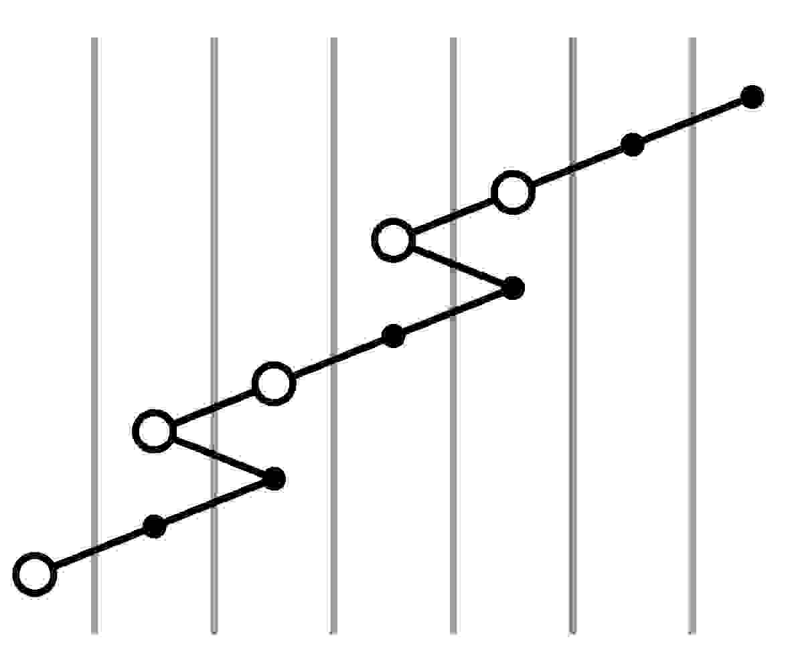
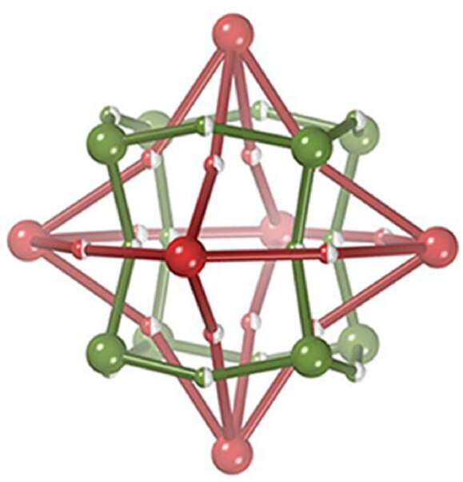

Research
My research interests lie within intersections of topology and algebra. Areas I am broadly interested in include:
- Geometric group theory
- Morse theory
- Knot theory
- Homotopy theory
- Quantum groups
I'm particularly interested in exploring invariants of low-dimensional manifolds, from well-studied cohomology theories to new(ish) categorical invariants (such as Khovanov homology).
I've also come to realize that most people, including most programmers, are not comfortable with pure mathematics, and most pure mathematicians are not comfortable with systems-level programming. I'm comfortable with both, so if there's a problem where I can utilize my knowledge in both areas simultaneously, I'm typically interested in it.
Publications and Preprints
|  |  |
Students
- Itamar Greenfield (Fall 2022)
- Matthew Chen (Spring 2022)
- Sherrie Tan (Summer 2021, Summer 2020)
- Brendan Polo (Spring 2021)
- Riley Guyett (Fall 2020)
Talks
2023
- March 17, Homotopical Categories II, HoMoToPIESS seminar, Cornell. (slides)
- March 10, Homotopical Categories I, HoMoToPIESS seminar, Cornell. (slides)
2022
- November 5, Big red dog algebras and hairy balls, BUGCAT 2022, Binghamton University. (abstract, recording)
- October 22, Knot polynomials from quantum groups, UNYTS 2022, Syracuse University. (abstract, slides, partial recording)
- September 21, joint with Emily Dautenhahn, Teaching Math 101, Cornell Math Teaching Seminar, Cornell. (slides)
2021
- November 23, Unexpected applications of Khovanov homology, Olivetti Seminar, Cornell.
- November 7, The hard yet tantalizing homology of Out(Fn), BUGCAT 2021 (archived link), Binghamton University. (abstract, slides, recording)
- April 21, Using math misconceptions in teaching, Cornell Math Teaching Seminar, Cornell. (slides)
2020
- December 15, A result by Hatcher and Thurston, Olivetti Seminar, Cornell.
2016
- September 19, Khovanov homology of rational tangles, MSI Honours Conference, ANU.
- August 26, Chemical weavings and coloured nets, 2016 PhB Symposium, ANU. (slides, audio)
- April 28, Hurwitz's theorem on sums of squares, MSI Honours Conference, ANU.